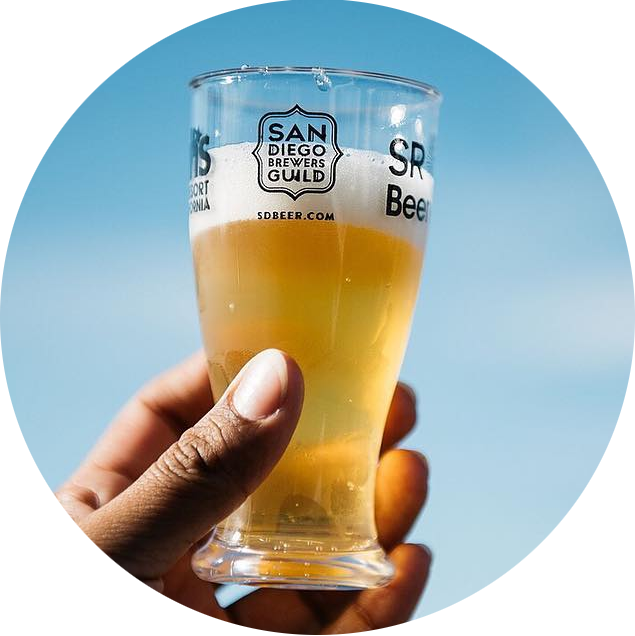

<div class="profile-container">
    
    


    <!-- <div>

      <mat-slide-toggle class="preferenceToggle" [(ngModel)]="brewPrefsChecked"><strong>Brew Preferences</strong></mat-slide-toggle>

      <mat-button-toggle-group class="preferenceGroup" #brewPreferences="matButtonToggleGroup" multiple *ngIf="this.brewPrefsChecked">
        <mat-button-toggle (change)="this.currentUser.preferences.brewPreferences.push('value pushed')" value="light" checked="{{this.currentUser.preferences.brewPreferences.includes('light')}}">Light</mat-button-toggle>
        <mat-button-toggle value="amber" checked="{{this.currentUser.preferences.brewPreferences.includes('amber')}}">Amber</mat-button-toggle>
        <mat-button-toggle value="dark" checked="{{this.currentUser.preferences.brewPreferences.includes('dark')}}">Dark</mat-button-toggle>
        <mat-button-toggle value="pilsners" checked="{{this.currentUser.preferences.brewPreferences.includes('pilsners')}}">Pilsners</mat-button-toggle>
        <mat-button-toggle value="stouts" checked="{{this.currentUser.preferences.brewPreferences.includes('stouts')}}">Stouts</mat-button-toggle>
        <mat-button-toggle value="sours" checked="{{this.currentUser.preferences.brewPreferences.includes('sours')}}">Sours</mat-button-toggle>
        <mat-button-toggle value="kombucha" checked="{{this.currentUser.preferences.brewPreferences.includes('kombucha')}}">Kombucha</mat-button-toggle>
        <mat-button-toggle value="lagers" checked="{{this.currentUser.preferences.brewPreferences.includes('lagers')}}">Lagers</mat-button-toggle>
        <mat-button-toggle value="porters" checked="{{this.currentUser.preferences.brewPreferences.includes('porters')}}">Porters</mat-button-toggle>
        <mat-button-toggle value="ipa" checked="{{this.currentUser.preferences.brewPreferences.includes('ipa')}}">IPA</mat-button-toggle>
        <mat-button-toggle value="blondes" checked="{{this.currentUser.preferences.brewPreferences.includes('blondes')}}">Blondes</mat-button-toggle>
        <mat-button-toggle value="belgian" checked="{{this.currentUser.preferences.brewPreferences.includes('belgiam')}}">Belgian</mat-button-toggle>
      </mat-button-toggle-group>
    </div> -->

    <div>
      <mat-slide-toggle class="preferenceToggle" [(ngModel)]="brewPrefsChecked"><strong>Brew Preferences</strong></mat-slide-toggle>
    
      <mat-button-toggle-group class="preferenceGroup" #brewPreferences="matButtonToggleGroup" multiple *ngIf="this.brewPrefsChecked">
        <mat-button-toggle *ngFor="let brew of this.preferenceOptions.brewPreferences" 
        (change)="this.addOrRemove(this.currentUser.preferences.brewPreferences, brew)"
        value="{{brew}}" checked="{{this.currentUser.preferences.brewPreferences.includes(brew)}}">
        {{brew}}</mat-button-toggle>
      </mat-button-toggle-group>
    </div>

    <div>
      <mat-slide-toggle class="preferenceToggle" [(ngModel)]="winePrefsChecked"><strong>Wine Preferences</strong></mat-slide-toggle>
    
      <mat-button-toggle-group class="preferenceGroup" #winePreferences="matButtonToggleGroup" multiple *ngIf="this.winePrefsChecked">
        <mat-button-toggle *ngFor="let wine of this.preferenceOptions.winePreferences" 
        (change)="this.addOrRemove(this.currentUser.preferences.winePreferences, wine)"
        value="{{wine}}" checked="{{this.currentUser.preferences.winePreferences.includes(wine)}}">
        {{wine}}</mat-button-toggle>
      </mat-button-toggle-group>
    </div>

    <div>
      <mat-slide-toggle class="preferenceToggle" [(ngModel)]="foodPrefsChecked"><strong>Food Preferences</strong></mat-slide-toggle>
    
      <mat-button-toggle-group class="preferenceGroup" #foodPreferences="matButtonToggleGroup" multiple *ngIf="this.foodPrefsChecked">
        <mat-button-toggle *ngFor="let food of this.preferenceOptions.foodPreferences" 
        (change)="this.addOrRemove(this.currentUser.preferences.foodPreferences, food)"
        value="{{food}}" checked="{{this.currentUser.preferences.foodPreferences.includes(food)}}">
        {{food}}</mat-button-toggle>
      </mat-button-toggle-group>
    </div>

    <div>
      <mat-slide-toggle class="preferenceToggle" [(ngModel)]="occasionPrefsChecked"><strong>Occasion Preferences</strong></mat-slide-toggle>
    
      <mat-button-toggle-group class="preferenceGroup" #occasionPreferences="matButtonToggleGroup" multiple *ngIf="this.occasionPrefsChecked">
        <mat-button-toggle *ngFor="let occasion of this.preferenceOptions.occasionPreferences" 
        (change)="this.addOrRemove(this.currentUser.preferences.occasionPreferences, occasion)"
        value="{{occasion}}" checked="{{this.currentUser.preferences.occasionPreferences.includes(occasion)}}">
        {{occasion}}</mat-button-toggle>
      </mat-button-toggle-group>
    </div>
<br><br><br><h2 (click)='this.printUser()'>Print Info</h2>

</div>

